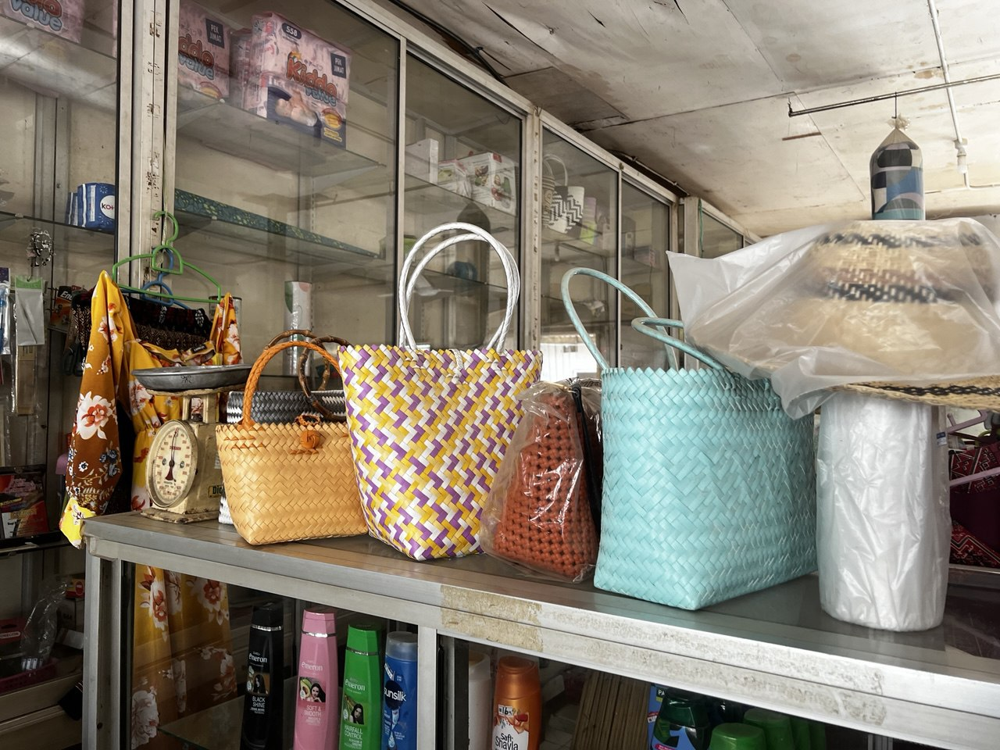
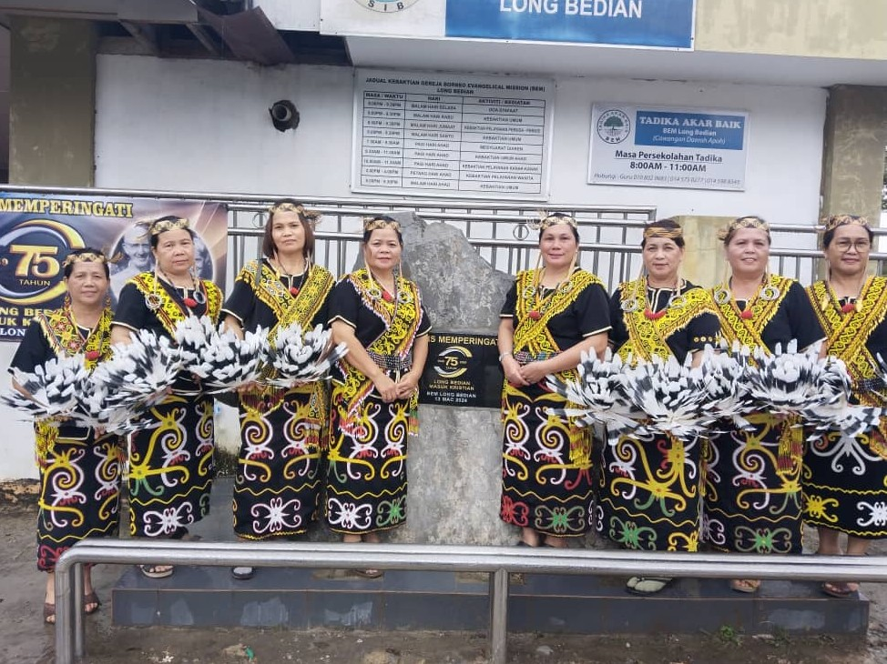
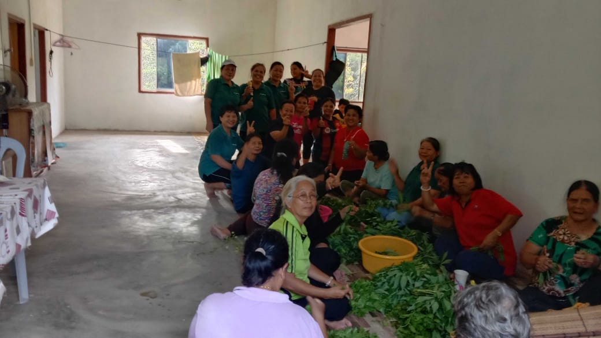

The Vibrant Kayan Culture
Annual Rites and Celebrations
Life in Long Bedian follows the rhythm of the seasons and the traditions passed down through generations. Kayan ceremonies often revolve around the agricultural cycle and major life events, strengthening communal bonds and cultural identity.
Dau Ledoh (Harvest Thanksgiving Festival)
The Dau Ledoh is the traditional peyen harvest thanksgiving festival, celebrated after the successful rice harvest. It is a time for the community to come together in gratitude for abundance and protection throughout the year.
The festival features communal feasting, cultural performances, traditional dances, chanting, and competitions that showcase Kayan heritage. Dau Ledoh also serves as a moment for giving thanks to ancestral spirits and the divine for blessings of prosperity and harmony. Today, it is often celebrated alongside wider Orang Penan and Orang Iban.
Life-Cycle Rites
Kayan culture places strong importance on ceremonies that mark life’s major transitions. These life-cycle rites include rituals for births, marriages, and deaths, each involving specific customs, prayers, and the participation of family and longhouse members.
Marriage rites, for example, traditionally include ritual exchanges and community blessings, symbolising the joining of families. Birth rituals welcome and protect the newborn, while mourning and memorial practices honour the departed and guide their spirit safely onward.
These rites reinforce kinship, respect for ancestors, and the spiritual foundations of Kayan society.
Craftsmanship, Clothing, and Cuisine
Intricate Handcrafts
The Kayan are renowned masters of Beadwork (lavish ornaments and costumes), Wood Carving (elaborate burial poles and longhouse decorations), and Rattan Weaving (durable baskets and mats). These objects are vital to social status and ritual life.
Traditional Attire
Ceremonial attire features intricate beadwork, animal teeth, feathers, and hand-woven cloths. The headgear often incorporates Hornbill feathers, a symbol of status and bravery.
Authentic Cuisine
The Kayan diet centers on freshly grown rice and jungle/river ingredients. Signature dishes include Pitoh Bahah (glutinous rice rolls) and Dinuh (deep-fried glutinous rice flour snack).
Sape' Melodies and Ancient Tales
Music and Dance
The haunting sound of the Sape' (a stringed instrument, sometimes called the boat lute) is synonymous with Orang Ulu culture. It is played during longhouse gatherings, often accompanying the Ngajat dance. The movements of the Ngajat, particularly the graceful feather-wielding dance by women, are performed to honor guests and celebrate success.
Local Stories and Folklore
Folklore is passed down through generations via storytelling tekna. These stories often feature legendary heroes, spirits of the forest and river, and the origins of the Kayan tribes, serving as moral guides and historical records.